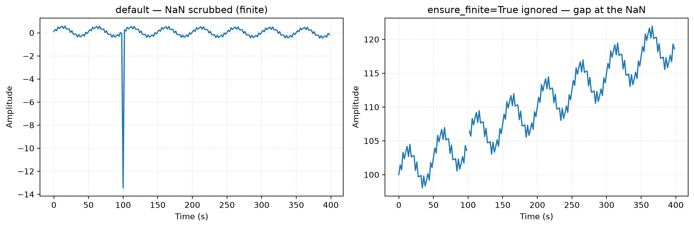

%pip install nilearn pydantic rich -q --progress-bar offFmriCleaner — nilearn.signal.clean, wrapped
fmri
nilearn
neuralset
neuroai
neuralset’s FmriCleaner silently drops ensure_finite when detrend/standardize/filters are all off — a walkthrough of facebookresearch/neuroai#130.
import warnings
warnings.filterwarnings("ignore")
import numpy as np
import matplotlib.pyplot as plt
import pydantic
from typing import Literal
%config InlineBackend.figure_format = "retina"
from rich import pretty
pretty.install()neuralset wraps nilearn.signal.clean in a tiny pydantic config object called FmriCleaner. If the five knobs (detrend, standardize, high_pass / low_pass, ensure_finite) are new to you, read signal-clean first — it builds the intuition from a synthetic signal. This notebook assumes that and focuses on what the wrapper adds:
- it’s a validated config object, not a bare function call;
- it flips the data contract to
(n_features, time)(nilearn wants(time, n_features)); - and it guards the
clean()call in a way that — per neuroai#130 — silently dropsensure_finitewhen the signal-processing knobs are off.
We reproduce the class inline so the guard is visible and the notebook runs without the full (torch-heavy) neuralset install.
# Reproduced verbatim from neuralset.extractors.neuro.FmriCleaner (neuralset 0.2.2)
# so this notebook is self-contained. Source: github.com/facebookresearch/neuroai
class FmriCleaner(pydantic.BaseModel):
"""Configuration for fMRI signal cleaning."""
model_config = pydantic.ConfigDict(extra="forbid")
standardize: Literal["zscore_sample", "zscore", "psc"] | bool = "zscore_sample"
detrend: bool = True
high_pass: float | None = None
low_pass: float | None = None
filter: Literal["butterworth", "cosine"] | None = None
ensure_finite: bool = True
def clean(self, data: np.ndarray, t_r: float) -> np.ndarray:
if (
self.detrend
or self.standardize
or (self.high_pass is not None)
or (self.low_pass is not None)
):
import nilearn.signal
data = data.T # set time as first dim
shape = data.shape
data = nilearn.signal.clean(
data.reshape(shape[0], -1),
t_r=t_r,
standardize=self.standardize,
high_pass=self.high_pass,
low_pass=self.low_pass,
filter=self.filter,
detrend=self.detrend,
ensure_finite=self.ensure_finite,
)
data = data.reshape(shape).T
return dataA config object, not a function
FmriCleaner is a pydantic.BaseModel: every field is typed and validated, defaults are declared once, and extra="forbid" means a misspelled option is rejected at construction instead of silently ignored. This is the pattern neuralset uses for all its configs.
print("fields & defaults:")
for name, field in FmriCleaner.model_fields.items():
print(f" {name:<14} default={field.default!r}")
print("\ndefault config:", FmriCleaner().model_dump())
# extra="forbid" -> a typo is a hard error, not a silent no-op
try:
FmriCleaner(detrendd=True) # note the typo
except pydantic.ValidationError as e:
print("\nrejected unknown field 'detrendd':", e.errors()[0]["type"])fields & defaults:
standardize default='zscore_sample'
detrend default=True
high_pass default=None
low_pass default=None
filter default=None
ensure_finite default=True
default config: {'standardize': 'zscore_sample', 'detrend': True, 'high_pass': None, 'low_pass': None, 'filter': None, 'ensure_finite': True}
rejected unknown field 'detrendd': extra_forbiddenThe data contract: (n_features, time)
nilearn.signal.clean expects time first — (time, n_features). FmriCleaner.clean(data, t_r) flips that: it takes (n_features, time) (the layout the rest of neuralset uses), transposes internally, cleans, then transposes back — so shape in equals shape out, for any number of feature dimensions. t_r is the repetition time in seconds (1 / frequency).
We build the same synthetic voxel as the signal-clean notebook — baseline + drift + slow wave + fast noise — and plant one NaN, because non-finite values are normal in fMRI (masks, registration, surface projection all leave them behind).
t_r = 2.0 # seconds per sample (a typical fMRI TR)
n = 200
t = np.arange(n) * t_r
truth = 100 + 0.05*t + 3*np.sin(2*np.pi*0.02*t) + 1*np.sin(2*np.pi*0.20*t)
signal = truth.copy().reshape(1, -1).astype(np.float32) # (n_features=1, time)
signal[0, 50] = np.nan # one planted NaN
print("signal shape (features, time):", signal.shape, " finite:", np.isfinite(signal).all())
# shape is preserved for any number of feature dims:
multi = np.random.randn(5, n).astype(np.float32)
print("multi-voxel in:", multi.shape, "-> out:", FmriCleaner().clean(multi, t_r).shape)signal shape (features, time): (1, 200) finite: False
multi-voxel in: (5, 200) -> out: (5, 200)The guard — and the bug (#130)
The whole issue lives in clean()’s opening if: it calls nilearn.signal.clean only when a signal-processing knob (detrend / standardize / a filter) is on. But ensure_finite is forwarded inside that call — so when every signal-processing knob is off, the call is skipped and ensure_finite goes with it, even when you set it to True.
Watch the same planted NaN (sample 50) under three configs:
def describe(name, x):
x = np.asarray(x).ravel()
print(f"{name:<48} finite={str(np.isfinite(x).all()):<5} sample50={x[50]:8.3f}")
describe("default (detrend+zscore)", FmriCleaner().clean(signal.copy(), t_r))
describe("detrend=F, standardize=F", FmriCleaner(detrend=False, standardize=False).clean(signal.copy(), t_r))
describe("detrend=F, standardize=F, ensure_finite=True", FmriCleaner(detrend=False, standardize=False, ensure_finite=True).clean(signal.copy(), t_r))default (detrend+zscore) finite=True sample50= -13.451
detrend=F, standardize=F finite=False sample50= nan
detrend=F, standardize=F, ensure_finite=True finite=False sample50= nandefault_out = FmriCleaner().clean(signal.copy(), t_r)
leaked_out = FmriCleaner(detrend=False, standardize=False, ensure_finite=True).clean(signal.copy(), t_r)
fig, (ax1, ax2) = plt.subplots(1, 2, figsize=(12, 4))
ax1.plot(t, default_out.ravel())
ax1.set_title("default — NaN scrubbed (finite)")
ax1.set_xlabel("Time (s)"); ax1.set_ylabel("Amplitude"); ax1.grid(True, linestyle=":", alpha=0.5)
ax2.plot(t, leaked_out.ravel())
ax2.set_title("ensure_finite=True ignored — gap at the NaN")
ax2.set_xlabel("Time (s)"); ax2.set_ylabel("Amplitude"); ax2.grid(True, linestyle=":", alpha=0.5)
plt.tight_layout()
plt.show()
The takeaway
ensure_finite is data hygiene — a different category from the signal-processing knobs (see signal-clean for why). The wrapper accidentally couples the two: by nesting ensure_finite inside a guard that only fires for detrend / standardize / filters, it turns “raw signal, just keep it finite” (detrend=False, standardize=False, ensure_finite=True) into “raw signal, NaNs and all” — and those NaNs detonate the moment a downstream model or fit touches them.
The fix is to honour ensure_finite independently of the other knobs — either by adding it to the guard, or by handling finite-replacement explicitly when the guard is otherwise false. That design choice is the next step.